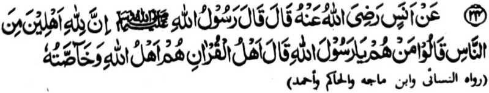
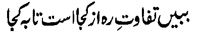

Miyakathitayan ko Anas (Radhiallaho ‘Anho) a pitharo iyan a pitharo o Rasulollah (Sallallaho ‘Alaihi wa Sallam), “Mata-an! A aden a ta-alok ko Allah si-i ko manga manosiya.” Pitharo iran [a manga Sahabah], “Antawa-a siran Ya Rasulollah (Sallallaho ‘Alaihi wa Sallam)!?” Pitharo iyan, “Siran so manga tao o Qur’an ka siran-i manga ta-alok o Allah go miyangapipili Iyan.”
“So manga tao o Qur’an” na giyoto so lalayon matetembang ko Qur’an ago aden a miyasalebo a babaya iyan non. So kababaloy ran a manga ta-alok ko Allah na tanto a marayag. Maliwanag pho-on sangka-iya osayan a amay ka so tao na matembang ko Qur’an, na so makalalawan a limo o Allah na tatap so kapephakatoron niyan kiran.
Mata-an a so manga tao a lalayon mipelolomameka o isa a tao na gi-i mbaloy a isa ko manga ta-alok rekaniyan. Tanto a maporo a bantogan a kaped ko ta-alok Rekaniyan a maped ta ko itongan o “Manga tao o Allah” go mimbaloy a pekhababaya-an Niyan, pantag bo sa tanto a maito a kaperomasay.
Tanto a mala a kaperomasay ago tamok a pekhibalabag o manga tao pantag bo ko kapakarani ko manga dato sa donya o di na makaped ko manga mosawira o dato. Pephamoday niran so manga tao a mboto ago langon a okit a kapangalimbaba-an na siyowa iran; na ibebetad iran noto sa mala-i kipantag. Ogaid na so kaperomasay pantag ko Qur’an na ibebetad sa ilang a masa ago ilang a bager.

Ilaya niyo so kiyapaka mbida o manga okit; tanto a mala a kiyapakasilay niyan.